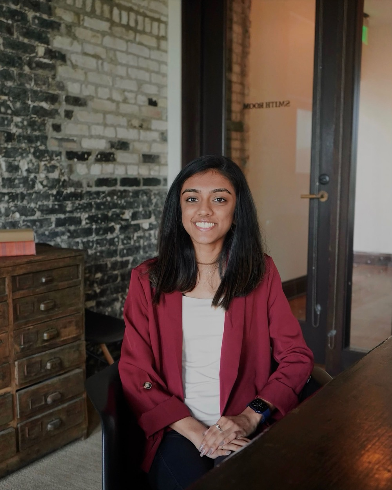

Real clients, real reputation, $10–20k months — and you've rebuilt the same document five hundred times. We map how your business actually runs, connect what you already own, and put AI on top — so the business holds its own context instead of living in your head. No prior AI experience needed.
Want to see how I actually work before you read a word?
You built something that works — real clients, real reputation, $10–20k months. And somehow you've built the same document five hundred times. Your processes live in one place, your client notes in another, years of recorded calls in a third — and none of it is connected. Every new client, every new hire, every new offer means starting from memory again, because nothing you've already made is where you can find it.
It isn't a discipline problem, and it isn't a tools problem — you have plenty of tools. Everything your business knows is already there, sitting in pockets: the drive folders, the sheets, the recordings, your head. It just isn't connected, so none of it is working for you. Nothing you build compounds. You keep paying for the same thinking twice.
What's missing is one place that holds how your business actually runs — a second brain. Not another tool to learn. One place to harvest what you already own, so the business stops living in fifty pockets and starts holding its own context. And I live it — I run my entire business on one, and I'll show you mine.

I map how businesses actually run — over 100 of them so far. A 150-person retail operation where the CEO couldn't see across his own 11 departments. A brokerage losing 8–10 hours a week to manual entry across 11 disconnected tools. A recruiting firm where every message was written from scratch. Different industries, same finding: the whole thing was running on one person's head.
And I live it. My own business — clients, pipeline, content, cash flow — runs on a second brain I built for myself first. That's the system I'll walk you through inside. Not theory I packaged. The thing I actually use, every day.
I'm impressed with how quickly this creates clarity. A clear view of what's happening operationally, where the bottlenecks are, and what needs to happen next.
I was looking for a place where I can actually implement and learn the things I see online — this is one of the only places where I got the help MY business needed and not some generic course or template.
This is exactly what I do. I literally tried to hire somebody to do that — I've been looking for this.
These are beautiful questions — absolutely amazing questions. The potential is enormous. It would be very valuable.
In your first hour, we map how your business actually runs and where the bottlenecks are. Clarity, on paper, out of your head.
We turn your trapped judgment — the standards only you can hold — into rules and systems, so the work stops routing through you.
We put AI to work on your operations, so your business holds its own context and runs without you re-explaining everything.
Most of them are one of three things: a video library, a piece of software, or a group chat. You get the one thing, and the rest is on you. That's why they don't stick — a course can't see your business, a tool can't tell you what to fix first, and a chat can't build anything.
This is all three, on purpose. Here's exactly what's underneath:
Every month I map your business — where the work actually sits, what moved, what's still stuck. There's no "lesson 4 of module 2." There's your operation, on the table, with someone who's mapped 100+ of them looking at it with you.
Your operating map isn't a one-time exercise — it stays live in the tool I built and run my own business on, and every 30 days we re-run it. Month one, a bottleneck comes off the map. Month two, the next one. You literally watch your business stop depending on you, on one screen.
Twenty owners with the same scattered business, building the same thing — and one buddy whose actual job is making sure you show up. Bought-and-never-used is the only way this fails, so the room exists to prevent exactly that.
This is me, walking you through the whole thing — what happens in your first hour, what each month actually looks like, and who shouldn't buy this. One take, no edits. If this isn't for you, the video will tell you faster than the page will.
No mystery, no "wait for onboarding." Exactly what happens the moment you join:
Ninety days in, three bottlenecks that used to route through you are mapped, systematized, and running without you — not because you learned more, but because there are fewer things only you can do. The business holds its own context, and you get your head back.
And for the founding 20 only — the live Second Brain Workshop: you build your first Claude-powered second-brain asset with me, live.
Who this is for — honestly ↓This is done with you. It works if you do.
The one number that matters ↓Your map, your bottleneck, your 30-day plan, the room, and the how — every month. Locked at $250 for life.